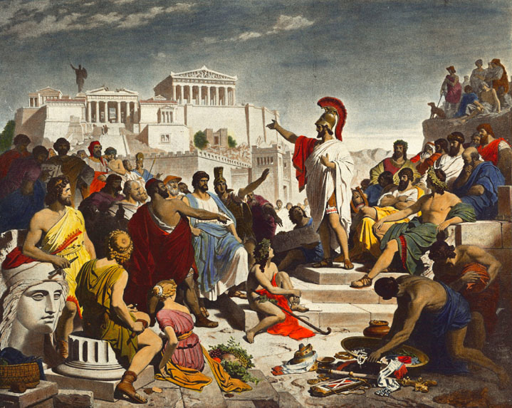

A democracia parece ser a sua preferência. Pode haver fezes de cachorro na rua, e a tomada de decisões é lenta e complicada porque todos têm direito a voto, mas as decisões são bastante transparentes e podem ser monitoradas. E ninguém é oprimido ou preso aleatoriamente.
RETORNAR